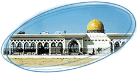

|
The implementation of building
GIA began on the 20th of January 1996 when H.E. President "Yasser Arafat", laid
its first basic stone declaring the commencement of building for one of Palestinian
symbols of independence. G.I.A. is located in Rafah area at point number 10 on the Palestinian Egyptian boarder .It has one runway with 3080m length and 60m width. It is designed according to ICAO
international airports standards therefore, its capable to receive most types of aircraft
including the wide-bodied jumbo jet. Its main hall along with modern passenger facilities can handle up to 700,000 passengers per annum, with possibilities for expansion. |
Its VIP lounge has the
traditional Islamic design with very prestigious feature. As formally inaugurated on 24 Nov .1998, G.I.A. is considered as symbol of Palestine's solid achievements and its unlimited future potential as the major gate-way of entry and/or exit to/from the country. According to the recent political agreements G.I.A. has been assigned the code "LVGZ" which reflects an independence in governing and regulating its operation. Finally, Mr. Salman Abu Halib Director General of Civil Aviation Authority, Director General of G.I.A. would like to present the achievment of the G.I.A. to the Palestinian people and leadership, hoping that the next national airport will open in Jerusalem soon. |